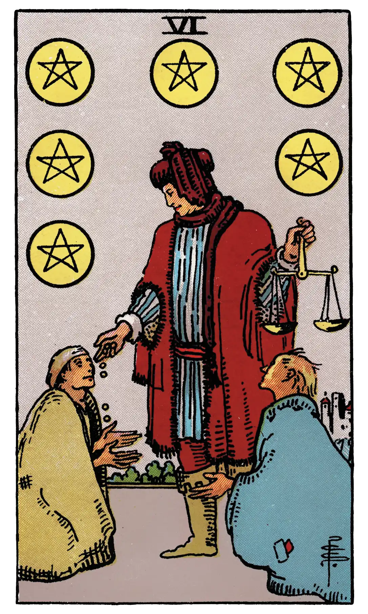

Six of Pentacles

A.E.W.
Upright
Presents, gifts [both of foregoing stem from a mis-translation of the French le présent ("the present", i.e. now)], gratification; another account says attention, vigilance; now is the accepted time, present prosperity, etc.
Additionally
The present must not be relied on.
Recurrence
2 - Irritability.
3 - Success.
4 - Abundance.
Reversed
Desire, cupidity, envy, jealousy, illusion.
Additionally
A check on the Querent's ambition.
Recurrence
2 - Downfall.
3 - Satisfaction.
4 - Care.
S.L.M.M.
Upright
Presents, Gifts, Gratification
Reversed
Ambition, Desire, Passion, Aim, Longing.
Description
A person in the guise of a merchant weighs money in a pair of scales and distributes it to the needy and distressed. It is a testimony to his own success in life, as well as to his goodness of heart.